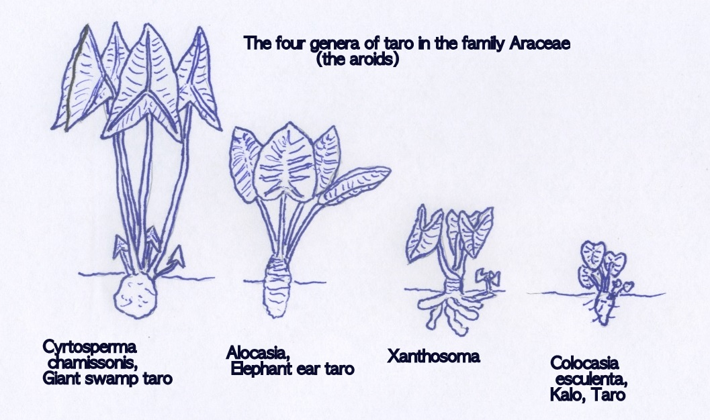
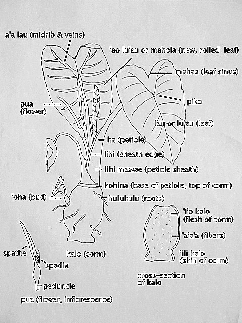
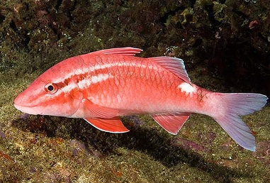
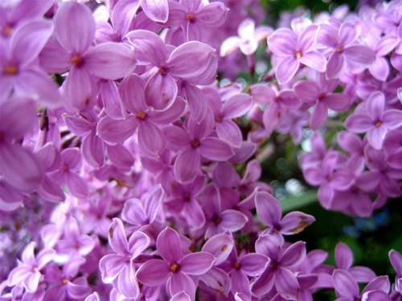

Content Area: CULTURE, SCIENCE, BOTANY, and BIOLOGICAL DIVERSITY
Standard: Evolution, Intelligent Design, and Environmental Sciences:
- Objective: Define biodiversity.
- Objective: Understand genetics and biological evolution's impact on the diversity of life.
- Objective: Name the parts of the kalo plant in both Hawaiian and botanical terms.
- Objective: Distinguish between the four genera (types) of taro.
- Objective: Distinguish between the classification (types) of kalo (Colocasia esculenta) varieties.
1. Define Biodiversity. Wikipedia.com defines biodiversity as the degree of variation of life forms within a given ecosystem, biome or on an entire planet. Biodiversity is one measure of the health of ecosystems.
2. View this video again about the importance of having multiple varieties of kalo to sustain a food supply in different environments. Video: Na `Ono o ka `Aina - Delicacies of the Land, min. 2:38. By ngtravelerseminars. Link to Youtube.com.
3. Learn the four genera of kalo: Cyrtosperma, Alocasia, Xanthosoma, and Colocasia esculenta. See this PDF Taro, Pacific Food Leaflet No. 5. Click the words to the left and the leaflet will download. Size 2.3 MB. Published by the Secretariat of the Pacific Community (SPC).

Credit: Weston Yap, Lois Englberger, SPC

Credit Weston Yap. Keiki on Mwoakilloa Atoll, Micronesia, present their farm of giant swamp taro, Cyrtosperma chamissonis.
4. Dissect a kalo plant into the main parts to study its characteristics. Make comparisons to the descriptions on this website: lau, hā, lihi, kōhina, ‘i’o kalo, ‘oha, pua, etc. Students will be able to identify the parts of the kalo plant.

Credit: Weston Yap, Penny Levin
5. Hawaiian culture is strongly connected to what we observe in the surrounding environment. Explore the connections found in the names of kalo varieties. Links to Kupunakalo.com.
- The lau, leaves, are shaped like cups: ‘Apuwai, ‘Apu, Pi‘i‘ali‘i, Pa‘akai, Moana.
- The lau, leaves, are smoky colored, like the burning from lava: Uahiapele.
- The hā, stems, or ‘I‘o kalo, corm, resemble the skin colorings of fish: Mana ‘Ōpelu, ‘Ula‘ula Kūmū, ‘O‘opukai, Manini Uliuli, Moi
- The lau, leaves, are spotted like the feathers of a bird: ‘Elepaio

Kūmū fish. Credit: Haole in Hawaii at Dailykos.com
6. Study the morphology (form and structure) of kalo. Explore these kalo categories in which differences are easily seen. Links to Kupunakalo.com. Descriptions taken from Taro Varieties in Hawai‘i. University of Hawai‘i, Bulletin 84. Link to CTAHR.hawaii.edu.
Group Mana: Parent corms branch at apex (stems branch at top of the corm).
- Ha yellowish-green at maturity, except pink or reddish at base. 8. Mana ‘Ulu.
- Ha pale green, prominently flecked with reddish-brown or purplish near base. 9. Mana ‘Ōpelu.
- Ha dark green with broad balckish lihi, white at kohina. 10. Mana Weo.
- Ha dark green with broad pink lihi. 11. Mana Uliuli.
- Ha flecked with purplish-red. 12. Mana ‘Ula‘ula.
- Ha dark green with brownish-purple marks. 13. Mana Lauloa.
- Ha dark green with distinct pinkish-red lihi. 14. Mana Ke‘oke‘o.
- Ha pale green, pink at lihi. 15. Mana Kūkuluhema.
Group Piko: The Mahae (the V at the top of leaf) is cut to the piko (center) where the lau (leaf) meets the hā (stem).
- Lau with outgrowths of dark, crinkled tissue on lower surface. 16. Piko Lehua Apei.
- Lau without outgrowths of crinkled tissue. 17. Piko ‘Ula‘ula.
- Hā light green, and pink at base. 18. Piko Kea.
- Hā light green and white at base. 19. Piko Ke‘oke‘o.
- Hā dark green and pink at base. 20. Piko Uaua.
- Hā dark green and white at base. 21. Piko Uliuli.
- Hā reddish-brown to purplish. 22. Piko ‘Ele‘ele.
Group Kāī: Lau concave and hanging (pendant), the margins with numerous fine undulations; hā slender, widely spreading.
- Hā diffused with light reddish-brown. 27. Kāī Uliuli.
- Hā light yellowish-green to whitish, white at base. 28. Kāī ‘Ala.
- Hā light yellowish-green to whitish, pink at base. 29. Kāī Kea.
Group Lauloa: Lau is long and slightly concave; margins with a few large undulations.
- Hā purplish-black with greenish lihi. 36. Lauloa ‘Ele‘ele ‘Ōma‘o.
- Hā purplish-black with pink lihi. 37. Lauloa ‘Ele‘ele ‘Ula.
- Hā dark green heavily colored with purplish-black, with blackish lihi, white at base. 38. Lauloa Palakea ‘Ele‘ele.
- Hā dark green heavily colored with purplish-black, with reddish-pink to almost whitish lihi, white at base. 39. Lauloa Palakea ‘Ula.
- Hā dark green heavily colored with purplish-black, pink at base. 40. Lauloa Palakea Papamū.
- Hā dark green with needle-like streaks. 41. Lauloa Palakea Ke‘oke‘o.
- Hā medium green tinged with reddish-purple at the top. 42. Lauloa Ke‘oke‘o.
Group ‘Ele‘ele: Hā with blackish color.
- Hā blackish, with narrow reddish lihi. 43. ‘Ele‘ele Mākoko
- Hā blackish, with narrow brownish to greenish lihi. 44. ‘Ele‘ele Naioea.
Group ‘Ula‘ula: Hā reddish, pink at base.
- Hā brilliant light red. 48. ‘Ula‘ula Kūmū.
- Hā dark reddish-purple with lighter red stripes. 49. ‘Ula‘ula Poni.
- Hā red to reddish-purples with yellowish-green stripes. 50. ‘Ula‘ula Moano.
Group Manini: Hā strongly striped or streaked, and corm flesh white.
- Hā dark green with broad purplish-black stripes. 53. Manini Uliuli.
- Hā with reddish-purple stripes. 54. Manini Kea.
- Hā profuse purplish-black stripes. 55. Manini Toretore.
Group Lehua: Hā predominantly green. Corm flesh lilac-purple.
- Hā light green with pinkish-lilac edges. 63. Lehua Maoli.
- Hā with broad purplish-black edges. 64. Lehua Ke‘oke‘o.
- Hā dark green with dark reddish to purplish-back lihi. 65. Lehua ‘Ele‘ele.
- Hā dark green with reddish to whitish lihi. 66. Lehua Pala‘i‘i.
7. Define lilac. Taro Varieties in Hawai‘i, Bulletin 84 refers to lilac a lot when it describes a light purple color. Here is a lilac:

Lilac. Photo credit feb28.com